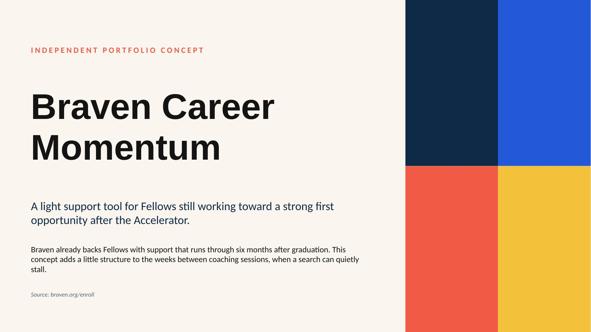
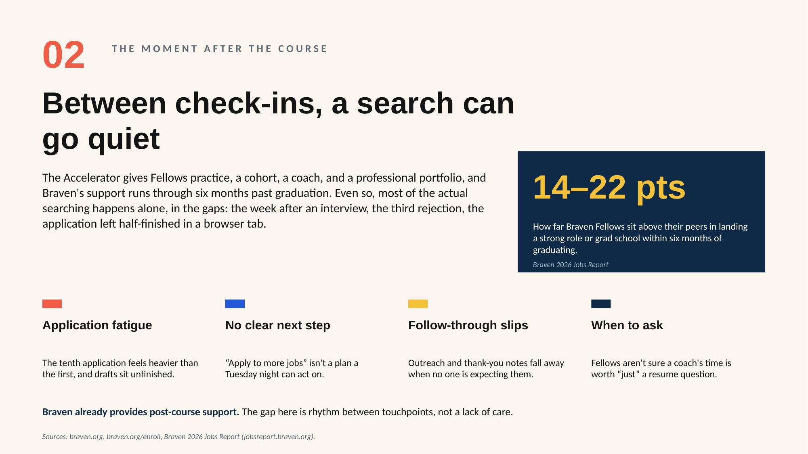
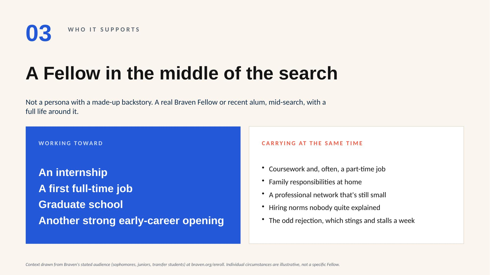
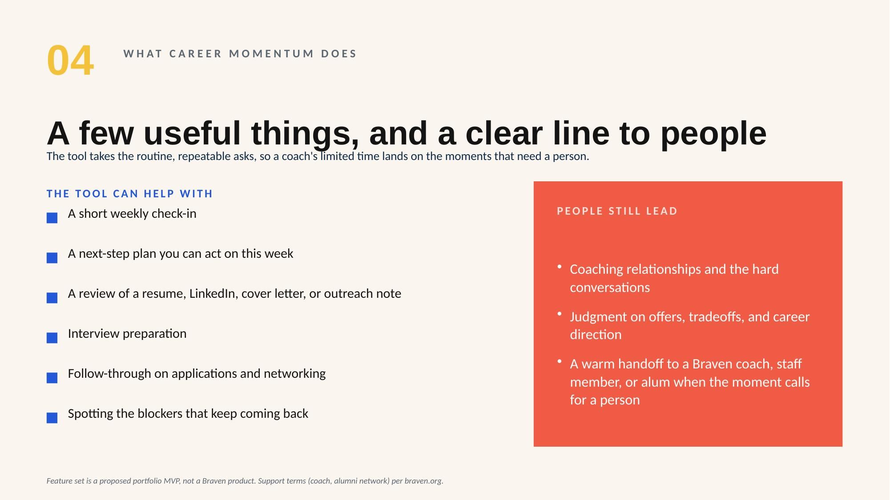
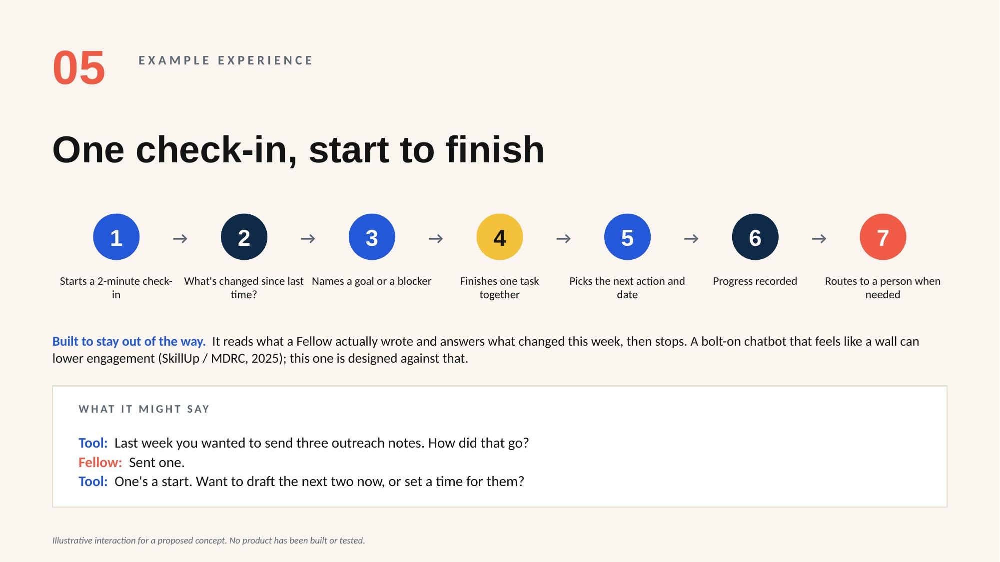
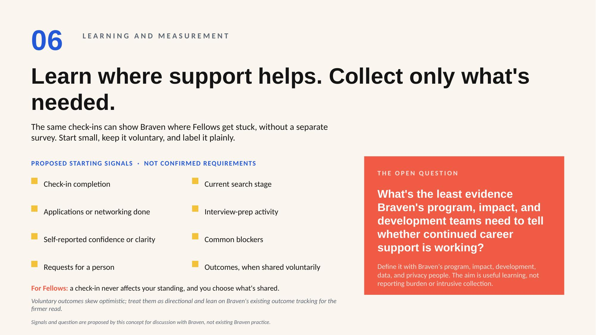
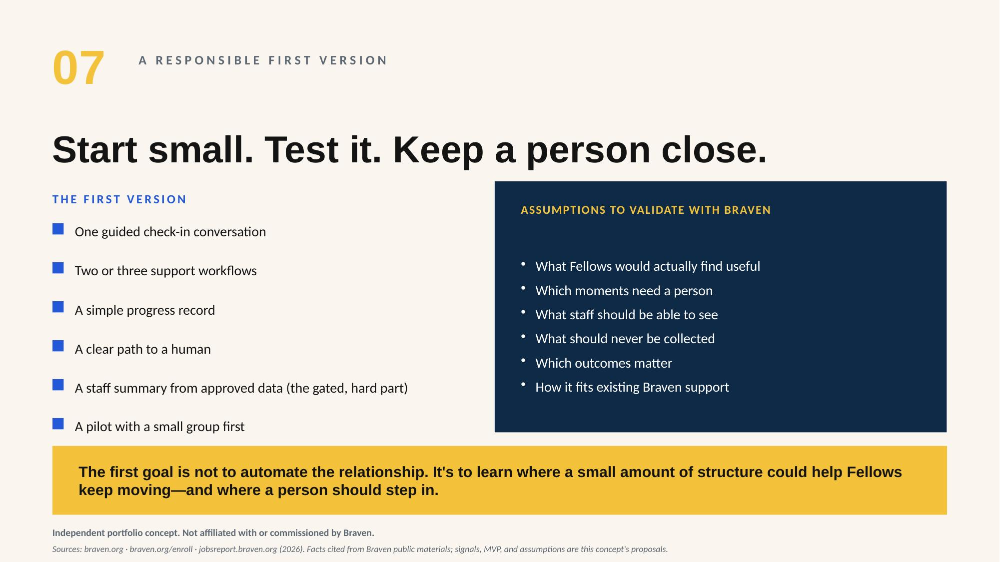

A light support tool for Fellows still working toward a strong first opportunity after the Accelerator.
Braven prepares college students, most of them first-gen or from low-income backgrounds, for a strong first job after graduation, and its support already runs through six months past graduation. Reading their public materials, one thing stood out. The stretch where Fellows can lose search momentum is also where the signal about whether continued support helps would come from. Help a Fellow keep moving between coaching sessions, and that signal comes out as a byproduct. No separate survey, and what's worth collecting stays Braven's call.
So the concept is small on purpose: a short weekly check-in, a next-step plan, a review of a resume or an outreach note, interview prep, and a clear handoff to a person when the moment needs one. It's a support layer, not a replacement for coaches. That line held through every decision.







The process is the point. I treated Claude as a collaborator with a clear division of labor. It did the research legwork; I judged what was credible. I directed the deck's design and voice instead of accepting a first pass. I ran a discernment step, arguing against the pitch the way a skeptical program lead would, then decided which objections survived and fixed them on the slides.
And I kept it honest: every factual claim traces to Braven's public site or its Jobs Report, assumptions are labeled as assumptions, and the open question of what data Braven actually needs is left for Braven to answer.